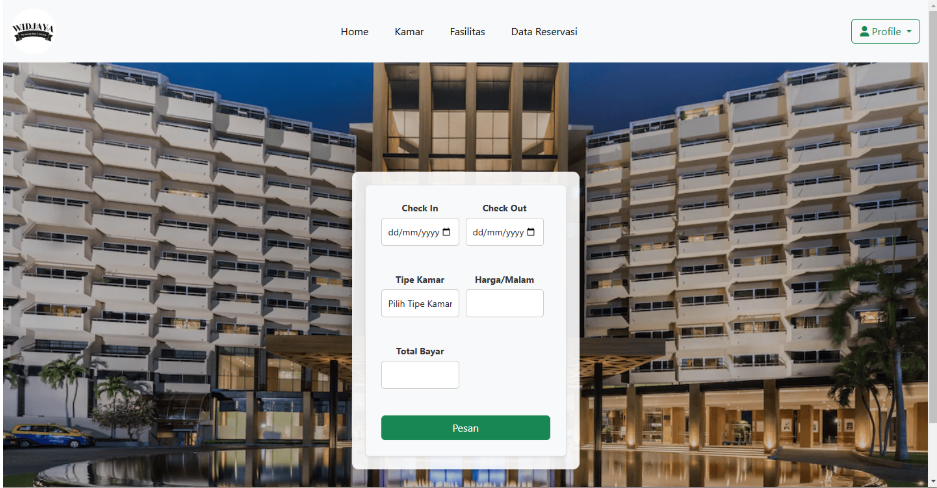

Karya/Widjaya Hotel
Widjaya Hotel
Sistem reservasi hotel dengan 17 halaman: daftar kamar, pemesanan, invoice, pembayaran daring, riwayat tamu, dan panel admin untuk mengelola semuanya.
- Tahun
- 2025
- Platform
- Web
- Tumpukan
- PHP native · Bootstrap
- Pembayaran
- Midtrans


Masalahnya
Reservasi lewat pesan pribadi membuat status kamar tidak pernah pasti: siapa sudah membayar, kamar mana yang masih kosong, dan berapa transaksi yang dibatalkan. Semua pertanyaan itu hanya bisa dijawab kalau pemesanan dan pembayaran berada di sistem yang sama.
Yang dibangun
- Galeri kamar dengan foto, harga, fasilitas, dan status ketersediaan.
- Formulir reservasi: pilihan tanggal, jumlah tamu, dan tipe kamar.
- Pembayaran melalui Midtrans, dengan invoice yang dihasilkan setelah transaksi berhasil.
- Halaman konfirmasi bagi admin untuk memverifikasi reservasi.
- Dashboard admin berisi statistik reservasi, status kamar, dan transaksi.
- Pengelolaan data pengguna dan riwayat reservasi.
- Daftar transaksi berhasil dan dibatalkan.
Keputusan teknis
PHP native, tanpa framework. Tujuannya memahami alur request, sesi, dan query secara langsung sebelum menyerahkannya ke framework. Konsekuensinya, struktur folder dan penamaan harus disiplin sendiri — dan itu bagian yang paling banyak mengajari saya.
Midtrans sebagai pintu pembayaran. Sistem tidak pernah menyimpan data kartu. Yang disimpan adalah status transaksi yang dikembalikan penyedia pembayaran, lalu dipetakan ke status reservasi.
Dua jalur masuk: tamu dan admin. Halaman tamu dan panel admin dipisahkan sejak awal, dengan sesi berbeda, agar tidak ada satu pun layar admin yang bisa dicapai tanpa masuk sebagai admin.
Yang saya pelajari
Status adalah inti sistem reservasi. Satu reservasi melewati beberapa keadaan — diajukan, dibayar, dikonfirmasi, selesai, atau dibatalkan — dan setiap layar harus tahu keadaan mana yang sedang berlaku. Ini pelajaran yang kemudian saya bawa ke proyek berikutnya.